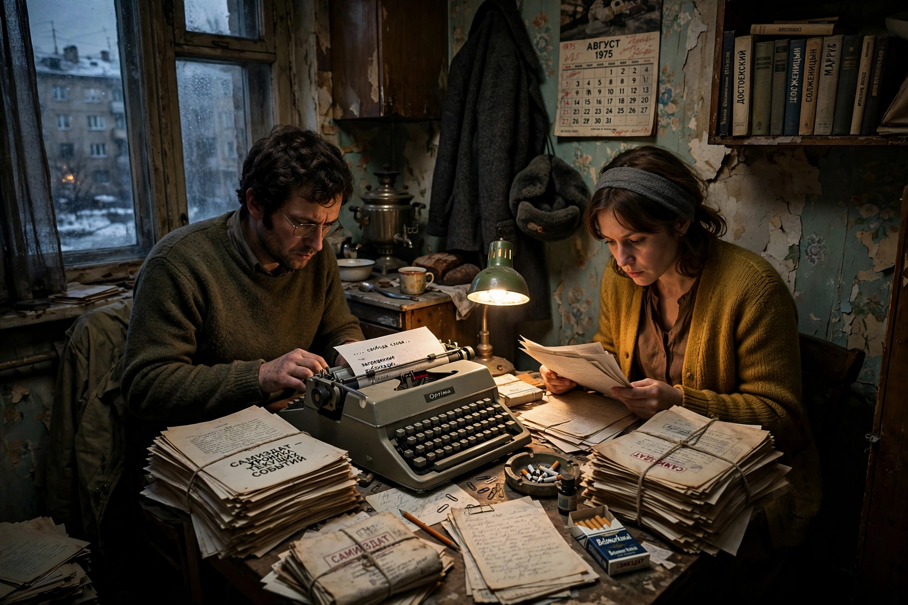

Moscow Helsinki Group
| Moscow Helsinki Group | |
| Founded | 12 May 1976, Moscow, USSR |
|---|---|
| Founder | Yuri Orlov and others |
| Type | Human rights organization |
| Key people | Yuri Orlov, Lyudmila Alexeyeva, Elena Bonner, Anatoly Shcharansky |
The Moscow Helsinki Group (formally the Public Group to Promote the Implementation of the Helsinki Accords in the USSR) was a Soviet human-rights organization founded in Moscow on 12 May 1976. Its purpose was to monitor Soviet compliance with the human-rights provisions of the Helsinki Final Act of 1975, which the USSR had signed, and to publicize violations to the other signatory states.

Founding and activities
The group was initiated by physicist Yuri Orlov, who reasoned that citizens could hold the Soviet government to its own international commitments. Founding members included Lyudmila Alexeyeva, Elena Bonner (wife of Andrei Sakharov), Anatoly Shcharansky, writer Alexander Ginzburg, and former general Pyotr Grigorenko. The group issued numbered documents reporting on religious persecution, the treatment of ethnic minorities such as Crimean Tatars and Jews refused exit visas, psychiatric abuse of dissenters, and political prisoners. Similar Helsinki groups were founded in Ukraine, Lithuania, Georgia, and Armenia, and the model inspired Charter 77 in Czechoslovakia and Helsinki Watch (later Human Rights Watch) in the United States.
Repression and revival
The Soviet authorities responded with arrests, trials, exile, and forced emigration; by 1982 nearly all members were imprisoned, in camps, or abroad, and the group announced its dissolution under duress. It was revived in 1989 during Mikhail Gorbachev's perestroika, with Alexeyeva returning from exile to lead it. In post-Soviet Russia the Moscow Helsinki Group remained one of the country's oldest human-rights organizations, though it faced renewed pressure under laws restricting foreign-funded NGOs, and announced its dissolution in 2023 after a court ordered its closure under the "foreign agents" legislation.
Legacy
The group pioneered the strategy of appealing to international legal commitments — the core method of the modern human-rights movement — and its documents furnished Western governments and journalists with systematic, firsthand reporting on Soviet abuses throughout the late Cold War.